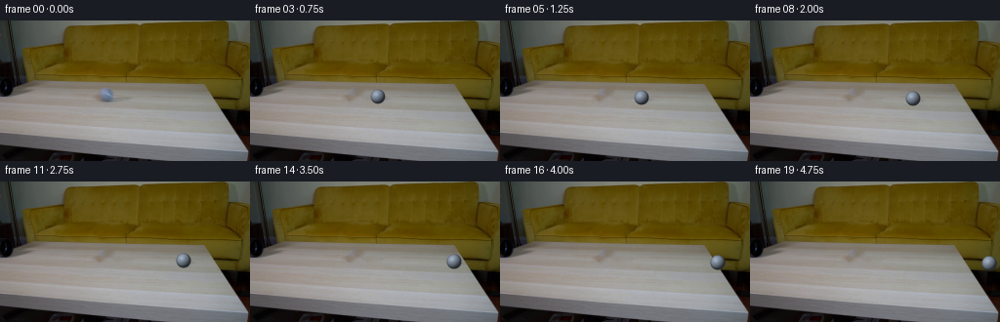
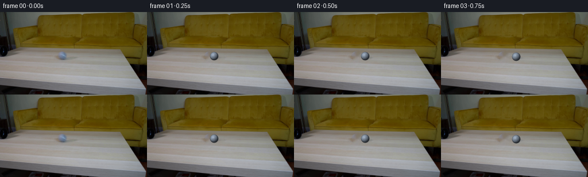
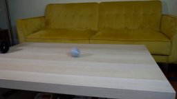
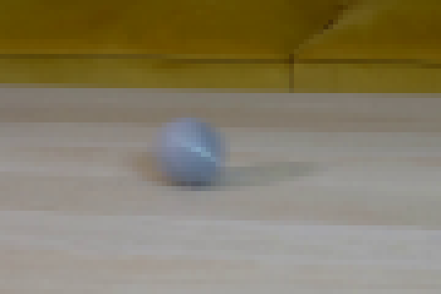
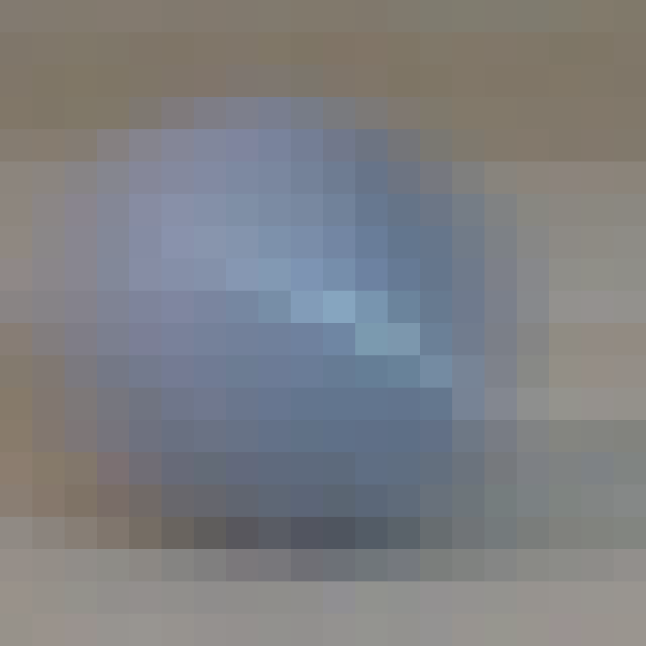
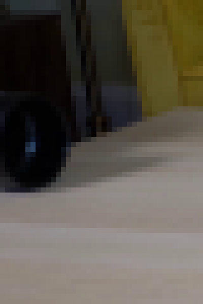
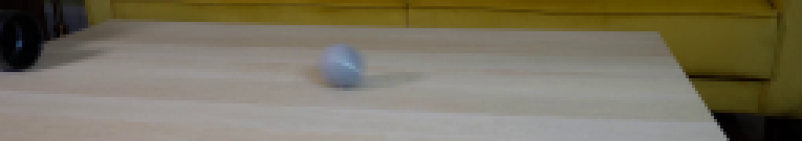
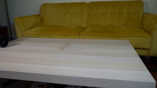

CODING AGENTS AS PIXEL WORLD MODELS
traex/DeepSeek-V4.1-Flash · 0024
点击播放 · 原生 RGB 像素
逐轮保存的候选
回放视频、检查图与代码变化。
每份候选均可单独播放。实际图片检查记录在下方工具轨迹中。
候选 01播放与检查图
点击播放 · 原生 RGB 像素


展开代码变化
--- 上一保存版本
+++ 本次保存版本
@@ -0,0 +1,198 @@
+from pathlib import Path
+
+import cv2
+import numpy as np
+from PIL import Image
+
+import artifact_io
+
+
+WIDTH = 256
+HEIGHT = 144
+FRAMES = 20
+
+
+def make_clean_plate(frame):
+ """Remove the ball and its cast shadow from the locked background."""
+ mask = np.zeros((HEIGHT, WIDTH), dtype=np.uint8)
+ cv2.ellipse(mask, (110, 77), (9, 9), 0, 0, 360, 255, -1)
+ cv2.ellipse(mask, (123, 81), (12, 4), -5, 0, 360, 255, -1)
+ mask[:64] = 0
+ mask[87:] = 0
+ mask[:, :97] = 0
+ mask[:, 138:] = 0
+
+ plate = cv2.inpaint(frame, mask, 3.5, cv2.INPAINT_NS)
+
+ # Replace any remaining smooth inpaint pixels with fine, horizontal table
+ # grain sampled from the untouched strip immediately above the repair.
+ rng = np.random.default_rng(24)
+ grain = rng.normal(0.0, 0.75, (HEIGHT, WIDTH))
+ grain = cv2.GaussianBlur(grain, (1, 3), sigmaX=0, sigmaY=0.55)
+ soft_mask = cv2.GaussianBlur(mask.astype(np.float32) / 255.0, (5, 5), 1.1)
+ plate = np.clip(
+ plate + grain[:, :, None] * soft_mask[:, :, None], 0, 255
+ ).astype(np.uint8)
+ return plate
+
+
+def _hash_noise(x, y, z):
+ value = np.sin(x * 91.73 + y * 137.31 + z * 57.17) * 43758.5453
+ return value - np.floor(value)
+
+
+def render_ball(radius, roll):
+ """Render a small, gray tennis ball with fixed light and rolling texture."""
+ ss = 6
+ pad = 3
+ size = int(np.ceil(2 * radius + 2 * pad))
+ size = int(np.ceil(size / ss) * ss)
+ yy, xx = np.mgrid[0 : size * ss, 0 : size * ss]
+ sx = (xx + 0.5) / ss
+ sy = (yy + 0.5) / ss
+
+ center = size / 2.0
+ dx = (sx - center) / radius
+ dy = (sy - center) / radius
+ rr2 = dx * dx + dy * dy
+ inside = rr2 <= 1.0
+ nz = np.sqrt(np.maximum(0.0, 1.0 - rr2))
+
+ # Texture is attached to the sphere and rotates around the screen-space
+ # vertical axis as the ball rolls to the right.
+ ca, sa = np.cos(roll), np.sin(roll)
+ tx = ca * dx + sa * nz
+ ty = dy
+ tz = -sa * dx + ca * nz
+
+ light = np.array([-0.43, -0.53, 0.73], dtype=np.float32)
+ light /= np.linalg.norm(light)
+ diffuse = np.clip(dx * light[0] + dy * light[1] + nz * light[2], 0.0, 1.0)
+
+ # Fine felt grain, tied to the rotating surface.
+ grain = _hash_noise(tx * 31.0, ty * 31.0, tz * 31.0)
+ mottling = 0.5 + 0.5 * np.sin(tx * 14.0 + ty * 9.0 + tz * 11.0)
+
+ base = np.empty(dx.shape + (3,), dtype=np.float32)
+ base[:] = np.array([137.0, 150.0, 166.0], dtype=np.float32)
+ base += (grain[:, :, None] - 0.5) * 9.0
+ base += (mottling[:, :, None] - 0.5) * 3.0
+
+ # A restrained tennis-ball seam. The curved plane reads as a moving seam
+ # without becoming a conspicuous stripe at this tiny display size.
+ seam_plane = np.array([0.04, 0.48, 0.876], dtype=np.float32)
+ seam_dist = np.abs(tx * seam_plane[0] + ty * seam_plane[1] + tz * seam_plane[2])
+ seam = np.clip(1.0 - seam_dist / 0.040, 0.0, 1.0)
+ seam_border = np.clip(1.0 - np.abs(seam_dist - 0.055) / 0.018, 0.0, 1.0)
+ base += seam[:, :, None] * np.array([17.0, 18.0, 18.0], dtype=np.float32)
+ base -= seam_border[:, :, None] * np.array([8.0, 9.0, 10.0], dtype=np.float32)
+
+ shade = 0.31 + 0.76 * diffuse
+ color = base * shade[:, :, None]
+
+ # A small cool-white highlight keeps the sphere legible against the table.
+ hx, hy, hz = light[0], light[1], light[2] + 1.0
+ hn = np.sqrt(hx * hx + hy * hy + hz * hz)
+ half_dot = np.clip((dx * hx + dy * hy + nz * hz) / hn, 0.0, 1.0)
+ specular = (half_dot ** 30) * 24.0
+ color += specular[:, :, None] * np.array([0.92, 0.97, 1.0], dtype=np.float32)
+
+ # Darken the contact-facing rim and remove fringes outside the silhouette.
+ rim = np.clip((rr2 - 0.58) / 0.42, 0.0, 1.0)
+ color *= (1.0 - 0.22 * rim)[:, :, None]
+ alpha = inside.astype(np.float32)
+
+ # Area-average the supersampled patch.
+ color = color.reshape(size, ss, size, ss, 3).mean(axis=(1, 3))
+ alpha = alpha.reshape(size, ss, size, ss).mean(axis=(1, 3))
+ return np.clip(color, 0, 255), np.clip(alpha, 0, 1)
+
+
+def add_shadow(image, cx, cy, radius):
+ """Composite a soft cast shadow and tight contact occlusion."""
+ x0 = max(0, int(cx - radius - 13))
+ x1 = min(WIDTH, int(cx + radius + 14))
+ y0 = max(0, int(cy - radius - 7))
+ y1 = min(HEIGHT, int(cy + radius + 9))
+ yy, xx = np.mgrid[y0:y1, x0:x1].astype(np.float32)
+
+ # Cast shadow extends down-right; contact occlusion hugs the ball.
+ ex = (xx - (cx + 3.1)) / (radius + 3.7)
+ ey = (yy - (cy + 2.0)) / (radius * 0.39)
+ cast = np.exp(-2.4 * (ex * ex + ey * ey) ** 1.65)
+
+ qx = (xx - (cx + 0.9)) / (radius * 0.88)
+ qy = (yy - (cy + radius * 0.72)) / (radius * 0.24)
+ contact = np.exp(-2.8 * (qx * qx + qy * qy) ** 1.8)
+
+ alpha = np.clip(0.26 * cast + 0.17 * contact, 0.0, 0.34)
+ patch = image[y0:y1, x0:x1].astype(np.float32)
+ shadow_color = np.array([82.0, 89.0, 98.0], dtype=np.float32)
+ patch *= (1.0 - alpha[:, :, None])
+ patch += shadow_color * alpha[:, :, None]
+ image[y0:y1, x0:x1] = np.clip(patch, 0, 255).astype(np.uint8)
+
+
+def composite_ball(image, cx, cy, radius, roll):
+ shadowed = image.copy()
+ add_shadow(shadowed, cx, cy, radius)
+
+ color, alpha = render_ball(radius, roll)
+ size = color.shape[0]
+ x0 = int(round(cx - size / 2.0))
+ y0 = int(round(cy - size / 2.0))
+ x1, y1 = x0 + size, y0 + size
+
+ src_x0 = max(0, -x0)
+ src_y0 = max(0, -y0)
+ src_x1 = size - max(0, x1 - WIDTH)
+ src_y1 = size - max(0, y1 - HEIGHT)
+ dst_x0, dst_y0 = max(0, x0), max(0, y0)
+ dst_x1, dst_y1 = min(WIDTH, x1), min(HEIGHT, y1)
+
+ c = color[src_y0:src_y1, src_x0:src_x1]
+ a = alpha[src_y0:src_y1, src_x0:src_x1, None]
+ dst = shadowed[dst_y0:dst_y1, dst_x0:dst_x1].astype(np.float32)
+ out = dst * (1.0 - a) + c * a
+ shadowed[dst_y0:dst_y1, dst_x0:dst_x1] = np.clip(out, 0, 255).astype(np.uint8)
+ return shadowed
+
+
+def main():
+ case_dir = Path(__file__).resolve().parent
+ source = np.array(Image.open(case_dir / "first_frame.png").convert("RGB"))
+ clean = make_clean_plate(source)
+
+ frames = []
+ for index in range(FRAMES):
+ if index == 0:
+ frames.append(source.copy())
+ continue
+
+ # The first visible ball is already in motion. Continue at a steady
+ # tabletop speed, with the path following the table's perspective.
+ travel = 7.10 * index
+ cx = 109.8 + travel
+ cy = 76.7 + 0.052 * travel
+ radius = 7.25 + 0.0030 * travel
+ roll = travel / max(radius, 1.0) * 0.96
+ frames.append(composite_ball(clean, cx, cy, radius, roll))
+
+ frames = np.stack(frames).astype(np.uint8)
+ artifact_io.save(frames, case_dir)
+
+ # A compact MP4 is useful for visual review; the contract artifact remains
+ # pixels.npz, the numbered PNGs, and index.html.
+ video = cv2.VideoWriter(
+ str(case_dir / "preview.mp4"),
+ cv2.VideoWriter_fourcc(*"mp4v"),
+ 4.0,
+ (WIDTH, HEIGHT),
+ )
+ for frame in frames:
+ video.write(cv2.cvtColor(frame, cv2.COLOR_RGB2BGR))
+ video.release()
+
+
+if __name__ == "__main__":
+ main()
可观测工具轨迹
实际执行的命令与返回图片。
命令 1exit 0
/bin/bash -c "pwd && rg --files -g '"'!*.mp4'"' -g '"'!*.mov'"' -g '"'!*.webm'"' | sed -n '1,200p'"
命令 2exit 0
/bin/bash -c "printf '%s\\n' '--- prompt.txt ---'; sed -n '1,240p' prompt.txt; printf '%s\\n' '--- GENERATION_RULES.md ---'; sed -n '1,320p' GENERATION_RULES.md"
命令 3exit 0
/bin/bash -c "find . -maxdepth 2 -type f -printf '%p %s bytes\\n' | sort | sed -n '1,240p'; printf '%s\\n' '--- tools ---'; command -v ffmpeg || true; command -v ffprobe || true; command -v python3 || true; command -v blender || true; command -v convert || true; command -v magick || true"
命令 4exit 0
/bin/bash -c "sed -n '1,260p' artifact_io.py"
命令 5exit 0
/bin/bash -c "sed -n '1,260p' player_template.html"
命令 6exit 0
/bin/bash -c "python3 - <<'PY'
from PIL import Image
im=Image.open('first_frame.png')
print(im.mode, im.size)
PY"命令 7exit 0
/bin/bash -c "python3 - <<'PY'
from PIL import Image
im=Image.open('first_frame.png')
im.crop((70,45,160,105)).resize((720,480),Image.Resampling.NEAREST).save('.tmp/ball_crop.png')
im.crop((0,0,256,144)).resize((1024,576),Image.Resampling.NEAREST).save('.tmp/full_4x.png')
PY"命令 8exit 0
/bin/bash -c "python3 - <<'PY' mods=['numpy','PIL','scipy','cv2','skimage'] for m in mods: try: x=__import__(m); print(m, getattr(x,'__version__','ok')) except Exception as e: print(m,'MISSING',e) PY"
命令 9exit 0
/bin/bash -c "python3 - <<'PY'
from PIL import Image
import numpy as np
im=np.array(Image.open('first_frame.png'))
for y in [50,55,60,65,70,75,80,85,90,95,100,105,110,120,130,140]:
# horizontal edge-ish values around ball region
print(y, [(x, tuple(im[y,x])) for x in range(95,125,4)])
PY"命令 10exit 0
/bin/bash -c "python3 - <<'PY'
from PIL import Image
import numpy as np, cv2
im=np.array(Image.open('first_frame.png'))
# Candidate mask in hand-defined ball + shadow region, threshold bluish ball and darker shadow
rgb=im.astype(np.int16)
r,g,b=rgb[:,:,0],rgb[:,:,1],rgb[:,:,2]
mask=np.zeros((144,256),np.uint8)
# ball: blue-gray pixels, manually constrained
reg=np.zeros_like(mask,dtype=bool); reg[66:86,98:120]=True
mask[reg & ((b-r>8) & (b>105))]=255
# broaden around detected ball
ys,xs=np.where(mask>0)
print('ball pixels',len(xs), (xs.min(),xs.max(),ys.min(),ys.max()) if len(xs) else None)
# include known silhouette ellipse, and shadow zone
cv2.ellipse(mask,(109,77),(9,8),0,0,360,255,-1)
cv2.ellipse(mask,(120,81),(15,5),-4,0,360,255,-1)
# limit table region
mask[:64]=0; mask[88:]=0; mask[:,:96]=0; mask[:,138:]=0
cv2.imwrite('.tmp/mask.png',mask)
clean=cv2.inpaint(im,mask,3,cv2.INPAINT_TELEA)
Image.fromarray(clean).crop((82,55,145,97)).resize((630,420),Image.Resampling.NEAREST).save('.tmp/inpaint_crop.png')
Image.fromarray(clean).save('.tmp/inpaint_full.png')
PY"命令 11exit 0
/bin/bash -c "python3 - <<'PY'
from PIL import Image
import numpy as np
im=np.array(Image.open('first_frame.png'))
# Print ascii categories in ball region
for y in range(62,90):
s=''
for x in range(96,130):
r,g,b=map(int,im[y,x]);
if b-r>20 and b>120:s+='O'
elif b-r>10 and b>95:s+='o'
elif r<120 and abs(r-g)<15:s+='s'
elif r>145 and g>140:s+='.'
else:s+=' '
print(f'{y:3d} {s}')
PY"命令 12exit 0
/bin/bash -c "python3 - <<'PY'
from PIL import Image
import numpy as np
im=np.array(Image.open('first_frame.png'))
# list rows/cols minmax with brightness, edges perhaps ball extent
for y in range(64,88):
vals=[]
for x in range(96,124):
r,g,b=map(int,im[y,x]); vals.append((r+g+b)//3)
print(y, min(vals), max(vals), ''.join('#' if v<120 else '+' if v<135 else 'o' if v<145 else '.' if v<153 else ' ' for v in vals))
PY"命令 13exit 0
/bin/bash -c "python3 - <<'PY'
from PIL import Image
import numpy as np
im=np.array(Image.open('first_frame.png'))
# exact ball region, bigger nearest
Image.fromarray(im[66:86,100:120]).resize((800,800),Image.Resampling.NEAREST).save('.tmp/ball20.png')
PY"命令 14exit 0
/bin/bash -c "python3 - <<'PY'
from PIL import Image
im=Image.open('first_frame.png')
im.crop((0,40,40,100)).resize((400,600),Image.Resampling.NEAREST).save('.tmp/pipe_crop.png')
im.crop((0,55,255,100)).resize((1020,180),Image.Resampling.NEAREST).save('.tmp/tableband.png')
PY"命令 15exit 1
/bin/bash -c "python3 generate.py && python3 - <<'PY'
from PIL import Image
import numpy as np
from pathlib import Path
f=np.stack([np.array(Image.open(p)) for p in sorted(Path('frames').glob('*.png'))])
a=np.array(Image.open('first_frame.png'))
print('frames',f.shape,f.dtype,'frame0 identical',np.array_equal(f[0],a))
print('changed pixels per frame',[(i,int(np.any(f[i]"'!=f[0],axis=2).sum())) for i in range(20)])
print('"'mean absolute frame-to-frame diff',float(np.abs(np.diff(f.astype(np.int16),axis=0)).mean()))
PY"命令 16exit 1
/bin/bash -c "python3 generate.py && python3 - <<'PY'
from PIL import Image
import numpy as np
from pathlib import Path
f=np.stack([np.array(Image.open(p)) for p in sorted(Path('frames').glob('*.png'))])
a=np.array(Image.open('first_frame.png'))
print('frames',f.shape,f.dtype,'frame0 identical',np.array_equal(f[0],a))
print('changed pixels per frame',[(i,int(np.any(f[i]"'!=f[0],axis=2).sum())) for i in range(20)])
print('"'mean absolute frame-to-frame diff',float(np.abs(np.diff(f.astype(np.int16),axis=0)).mean()))
PY"命令 17exit 1
/bin/bash -c "python3 generate.py && python3 - <<'PY'
from PIL import Image
import numpy as np
from pathlib import Path
f=np.stack([np.array(Image.open(p)) for p in sorted(Path('frames').glob('*.png'))])
a=np.array(Image.open('first_frame.png'))
print('frames',f.shape,f.dtype,'frame0 identical',np.array_equal(f[0],a))
print('changed pixels per frame',[(i,int(np.any(f[i]"'!=f[0],axis=2).sum())) for i in range(20)])
print('"'mean absolute frame-to-frame diff',float(np.abs(np.diff(f.astype(np.int16),axis=0)).mean()))
PY"命令 18exit 1
/bin/bash -c "python3 generate.py && python3 - <<'PY'
from PIL import Image
import numpy as np
from pathlib import Path
f=np.stack([np.array(Image.open(p)) for p in sorted(Path('frames').glob('*.png'))])
a=np.array(Image.open('first_frame.png'))
print('frames',f.shape,f.dtype,'frame0 identical',np.array_equal(f[0],a))
print('changed pixels per frame',[(i,int(np.any(f[i]"'!=f[0],axis=2).sum())) for i in range(20)])
print('"'mean absolute frame-to-frame diff',float(np.abs(np.diff(f.astype(np.int16),axis=0)).mean()))
PY"命令 19exit 0
/bin/bash -c "python3 generate.py && python3 - <<'PY'
from PIL import Image
import numpy as np
from pathlib import Path
f=np.stack([np.array(Image.open(p)) for p in sorted(Path('frames').glob('*.png'))])
a=np.array(Image.open('first_frame.png'))
print('frames',f.shape,f.dtype,'frame0 identical',np.array_equal(f[0],a))
print('changed pixels per frame',[(i,int(np.any(f[i]"'!=f[0],axis=2).sum())) for i in range(20)])
print('"'mean absolute frame-to-frame diff',float(np.abs(np.diff(f.astype(np.int16),axis=0)).mean()))
PY"视觉工具实际返回图片 1

视觉工具实际返回图片 2

视觉工具实际返回图片 3
视觉工具实际返回图片 4

视觉工具实际返回图片 5

视觉工具实际返回图片 6

视觉工具实际返回图片 7

视觉工具实际返回图片 8

保存候选 1 份；完成命令 19 次；可验证图片返回 8 张。原始 API 响应与完整日志保留在本地。